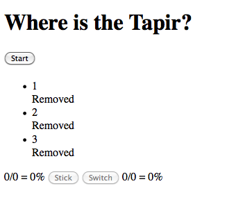
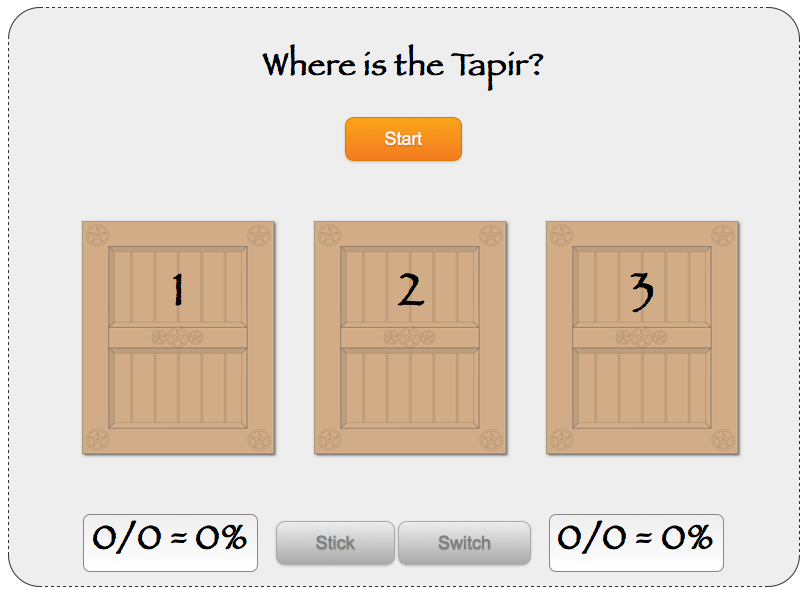
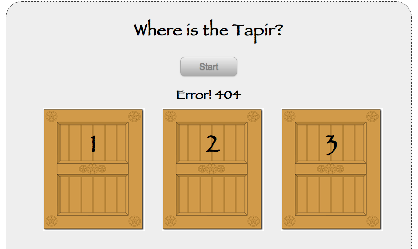
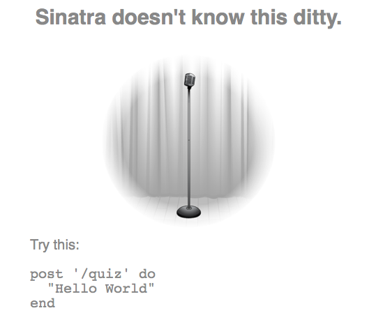
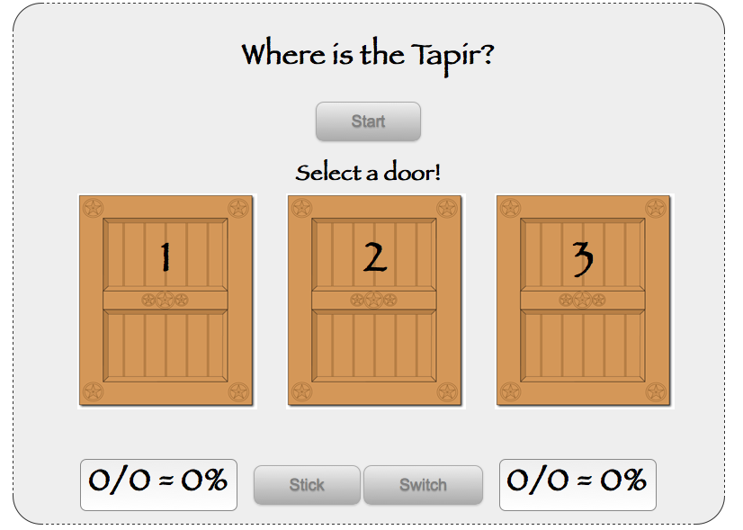
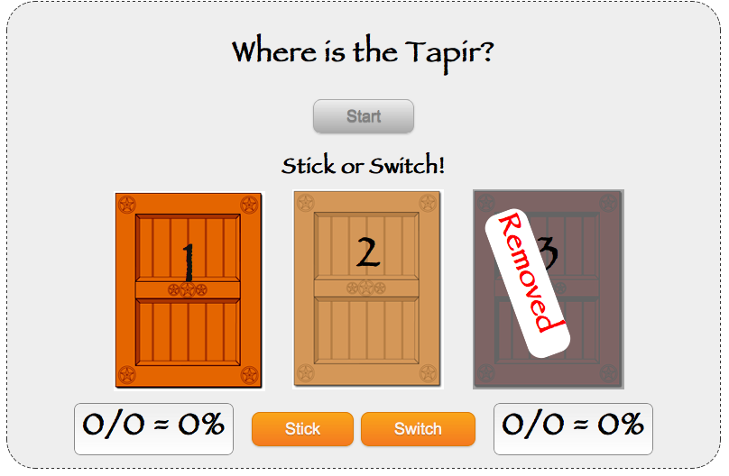
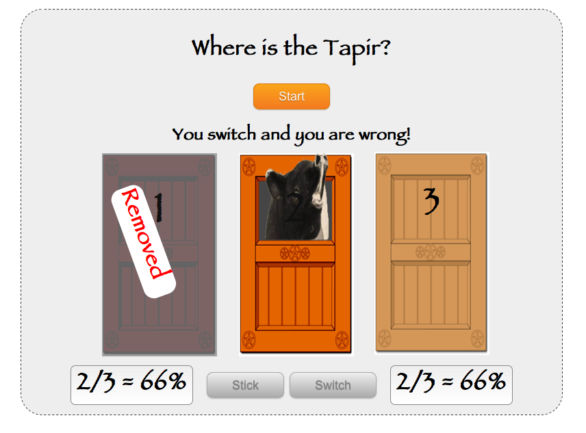

jQuery & Sinatra
A Classy Combination
anders.janmyr@jayway.com
http://anders.janmyr.com
@andersjanmyr
Old man, short attention span, No time to wait for Maven, Dynamic languages, fast feedback
| space, → | next slide |
| ← | previous slide |
| d | debug mode |
| ## <ret> | go to slide # |
| c | table of contents (vi) |
| f | toggle footer |
| r | reload slides |
| z | toggle help (this) |
Old man, short attention span, No time to wait for Maven, Dynamic languages, fast feedback

A priest fell into a well, but managed to grab hold of a small root an the way down. He started to scream, "Hello, is there anybody up there?". Nothing happened! He screamed again "Hello, is there anybody up there?", Suddenly a sound of thunder came from the clouds above the well. "This is your God speaking, let go of the root and I will save you!" A brief silence then the priest screamed, "Is there anybody else up there?"
Whether you like Javascript or not does not have anything to do with rational thinking, it is a lot closer to religion than that. My point with this presentation is to show you why I love Javascript, with the hope, that you will come to love it too.


Sticker, the odds are better if I stick!
Switcher, the odds are better if I switch!
Don't care, the odds are the same!
Simple HTML
<!DOCTYPE html>
<html>
<head>
<link rel="stylesheet" href="app.css" type="text/css">
<title>Where's the Tapir?</title>
</head>
<body class='orange'>
<form>
<h1>Where is the Tapir?</h1>
<div id='start-header'>
<button id='start'>Start</button>
<h2 id='info-text'></h2>
</div>
<ul id='doors'>
<li id='door-1' data-id='1'>1<div>Removed</div></li>
<li id='door-2' data-id='2'>2<div>Removed</div></li>
<li id='door-3' data-id='3'>3<div>Removed</div></li>
</ul>
<div id='stick-switch'>
<span id='stick-count'>0/0 = 0%</span>
<button data-id='stick' disabled>Stick</button>
<button data-id='switch' disabled>Switch</button>
<span id='switch-count'>0/0 = 0%</span>
</div>
</form>
<script src='http://ajax.googleapis.com/ajax/libs/jquery/1.4.3/jquery.min.js'> </script>
<script type="text/javascript" src="app.js"> </script>
</body>
</html><body class='orange'>
...
<li id='door-1' data-id='1'>1<div>Removed</div></li>
...
<script src='http://ajax.googleapis.com/ajax/libs/jquery/1.4.3/jquery.min.js'> </script>
<script type="text/javascript" src="app.js"> </script>
</body>
</html>$ gem install sinatra
Successfully installed sinatra-1.1
1 gem installed
# app.rb
require 'rubygems'
require 'sinatra'
# Serve static files from public
set :public, "./public"$ ruby app.rb
== Sinatra/1.1.0 has taken the stage on 4567 for development with backup from Thin
>> Thin web server (v1.2.7 codename No Hup)
>> Maximum connections set to 1024
>> Listening on 0.0.0.0:4567, CTRL+C to stop
// The jQuery function executes when
// the DOM is ready to be manipulated
// when given a function as parameter
$(function() {
result = 'The DOM is ready';
})// Select the element with id start
// and attach a click listener to it
// when given a string as parameter
$('#start').click(function(e) {
alert("OK, OK, I'm clicked!");
});// Wraps the element
// when given a element as parameter
$('#disable_me').click(function(e) {
$(this).attr('disabled', 'disabled');
});$(function() { //jQuery document ready
$('#start').click(function(e) {
e.preventDefault();
$(this).attr('disabled', 'disabled');
$('#info-text').text("New quiz started");
$.ajax(...);
});
});$(function() {
function info(text) {
$('#info-text').text(text);
}
$('#start').click(function(e) {
e.preventDefault();
$(this).attr('disabled', 'disabled');
info("New quiz started");
$.ajax(...);
});
});$.ajax({
type: 'POST',
url: '/quiz',
dataType: 'text',
success: function(data) { ... },
error: function(xhr, status, error) {
info('Error! ' +
( error ? error : xhr.status ));
}
});$.get(url, data, successCallback, dataType);
$.post(url, data, successCallback, dataType);
$.getJSON(url, data, successCallback);
$.getScript(url, data, successCallback);
.load(url, data, successCallback);
// No error handling$.post('/quiz',
function(data) { ... },
'text');
// No error handling

post "/quiz" do
endget # GET
post # POST
put # PUT
delete # DELETEpost "/quiz" do
Quiz.new.quiz_id.to_s
endget "/" do
redirect '/index.html'
end$.ajax({
type: 'POST',
url: '/quiz',
dataType: 'text',
success: function(token) {
$('#start').attr('disabled', 'disabled');
saveToken(token);
enableDoors();
},
error: function(xhr, status, error) {
info('Error! ' +
( error ? error : xhr.status ));
});$.ajaxSetup({
dataType: 'text',
error: function(xhr, status, error) {
info('Error! ' +
( error ? error : xhr.status ));
});$.post('/quiz', function(token) {
$('#start').attr('disabled', 'disabled');
saveToken(token);
enableDoors();
});var currentToken;
function saveToken(token) {
currentToken = token;
}
function enableDoors() {
// ...
}function enableDoors() {
info("Select a door!");
$('#doors li')
.addClass('enabled')
.hover(
function() {$(this).addClass('hover')},
function() {$(this).removeClass('hover')})
.bind('click', doorSelected);
}
function doorSelected(e) {
...
var door = $(this).data('id');
$('#doors li')
.unbind('click mouseenter mouseleave')
putSelected(door);
}function putSelected(door) {
$.ajax({
type: 'PUT',
url: '/quiz/' + currentToken
+ '/select/' + door,
success: function(data) { ... }
});
}put '/quiz/:quiz/select/:door' do
"#{params[:quiz]}, #{params[:door]}"
end
# /quiz/234/select/3
# => 234, 3put '/quiz/:quiz/select/:door' do |q, d|
"#{q}, #{d}"
end
# /quiz/234/select/3
# => 234, 3
# /quiz/234/select/3/5/6
# => "HTTP/1.1" 404put '/quiz' do
"#{params[:quiz]}, #{params[:door]}"
end
# GET Style
# /quiz?quiz=234&door=3
# => 234, 3
# POST Style
# /quiz
# quiz=234&door=3
# => 234, 3put "/quiz/:quiz/select/:door" do |quiz, door|
quiz = Quiz.quizzes[quiz.to_i]
quiz.remove_door(door).to_s
endfunction putSelected(door) {
...
success: function(data) {
info("Stick or Switch!");
...
$('#stick-switch button')
.removeAttr('disabled');
}
});
}
function putChoice(value) {
$.ajax({
type: 'PUT',
dataType: 'json',
url: '/quiz/' + currentToken + '/' + value ,
success: function(data) {
...
}
});
}put "/quiz/*/*" do
endput '/quiz/*/*' do
"#{params[:splat]}"
end
# /quiz/234/stick
# => [234, 'stick']
# /quiz/234/stick/3/5/6
# => [234, stick/3/5/6]put '/quiz/*/*' do |q, c|
"#{q}, #{c}"
end
# /quiz/234/stick
# => 234, stick
# /quiz/234/select/3/5/6
# => 234, 3/5/6require 'json'
put "/quiz/*/*" do |quiz, choice|
quiz = Quiz.quizzes[quiz.to_i]
quiz.choose(choice)
status = quiz.status
Stats.get(status)
status.to_json
end{
"correct_door": 3,
"is_correct": false,
"choice": "stick",
"stick": [8, 14],
"switch": [2, 5]
}function putChoice(value) {
$.ajax({
...
success: function(data) {
updateImage(data);
infoResult(data);
updateStats(data);
resetButtons();
}
});
}function updateStats(data) {
updateStat(data, 'stick');
updateStat(data, 'switch');
}function updateStat(data, kind) {
var arr = data[kind];
var correct = arr[0], guesses = arr[1];
var percentage = 0;
if (guesses > 0) {
percentage =
parseInt(correct / guesses * 100);
}
var text = correct + '/' + guesses
+ ' = ' + percentage + '%'
$('#' + kind + '-count').text(text);
}
$.getJSON('/stats', function(data) {
updateStats(data);
resetButtons();
});get '/stats' do
Stats.get.to_json
end{
"stick": [8, 14],
"switch": [2, 5]
}$ git push heroku master #deploy to heroku
Counting objects: 9, done.
Delta compression using up to 2 threads.
Compressing objects: 100% (5/5), done.
Writing objects: 100% (5/5), 604 bytes, done.
Total 5 (delta 3), reused 0 (delta 0)
-----> Heroku receiving push
-----> Sinatra app detected
-----> Gemfile detected, running Bundler version 1.0.3
All dependencies are satisfied
Compiled slug size is 1.1MB
-----> Launching.......... done
http://wheres-the-tapir.heroku.com deployed to Heroku
To git@heroku.com:wheres-the-tapir.git
dd075d4..7bc04fd master -> master
Live, http://wheres-the-tapir.heroku.com/index.html
Source, http://github.com/andersjanmyr/wheres-the-tapir